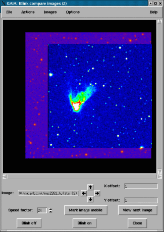

Before you can use this toolbox you must have at least two images displayed. To display more than one image go to the "Open" menu in the main window and select "New Window". Now you can display a second image in the new window and open the blink toolbox. If you find opening images this way tedious then you can load a list of images from the command-line:
% gaiadisp image1 image2 image3 ...
You only move one image at a time. The simplest way is to just click on an image and drag it around. Alternatively you can move around the "mobile" image using the arrow button arrangement or by using your keyboard arrow keys. The mobile image is the one that you last clicked on, or, if you haven't yet clicked on anything, it will be the one displayed uppermost. Pressing "Mark image mobile" makes the uppermost image the mobile one anyway.
If you want to use your arrow keys then you should place your mouse cursor within the bounds of the region where the image is displayed, so that area gets the keyboard focus. The image can be moved in larger steps by pressing the Control or Shift key and the arrow keys together.
The scroll of the blink window can be adjusted to show approximately the same view as the associated main window (the one matching the clone window number shown in the titlebar) by pressing the "c" key. This is also available as the menu item "Actions->Position like main image".
The images that are blinked are "views" of all the images displayed in the main windows. To add a new image close the blink window create a new window and display the new image in it. Now when you create a new blink toolbox this will also be shown.
To remove an image select the "Images" menu at the top of the window and deselect the appropriate one. Note you must have at least one image displayed.
The blinked images are just "views" of the main images (like the zoom and pan windows) and copy any changes made to the main images (including colour changes and zoom, but not pan). So if you want to zoom an image in, zoom the main display.
Increased blinking speeds correspond to a lower "Speed factor". To reduce the speed factor press the down arrowhead to the right of the number. Speed factor 1 is as fast as it goes.
The best way to use the blink window is to run it on a lightly loaded machine with an integral X display (i.e. a local machine not a server). Running over a network or on a heavily loaded machine will give an inconsistent refresh rate, about which you can do little except keep the speed factor high. If things are really bad on your system then switch blinking off and use the "View next image" button to cycle the image stack by hand.
You can cycle through the displayed images one-by-one by using the "View next image" button. Alternatively you can get the same effect by pressing the <Return> key when the mouse cursor is in the image display region.
If your images have a WCS component, or are aligned by NDF pixels coordinates and the alignment between them is in the sense of shifts or rotations through 90 180 or 270 degrees (i.e. can be achieved using the flip and interchange buttons in the main windows), then you can ask GAIA to guess an appropriate orientation and position and align your images.
When you open the blink toolbox it attempts an initial alignment of any offsets using the CRPIX values (for FITS files) or NDF origins, you can apply this option yourself at any time using the "Apply NDF origins" or "Apply CRPIX shifts" items in the "Actions" menu. A more complete analysis of positioning can be attempted using the "Apply WCS shifts" item.
Note that images do have to be overlapping, so using the "Apply WCS shifts" option will align CCD Mosaic images into a single exposure.
In a previous incarnation of this toolbox you could only view one image at a time, this was equivalent to a classical blink comparator. Switch this option back on if you preferred things that way!
You can save the offsets between your images using the "File->Save offsets" item.